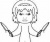

|
 |
镜像页面
本页面最初为
jiexi:滑稽
的全文镜像，并已得到许可。
|

|
用语解释
本页是一个 专有名词 的恶俗概念解释页面。 |
滑稽 是百度贴吧默认气泡表情中的一种，最初形象是较为扁平的“色”，2013年贴吧改版后变为现在的形象（2016年再版后微调了一些），后被QQ、微博等收录。由于近年来贴吧低龄化严重以及李艳红暴力炒作推广此表情，导致大量小鬼疯狂滥用该表情，十分令人厌恶。
| 滑稽 | |
|---|---|

小鬼们最爱的表情 |
|
|
释义 |
黄豆 |
|
场合 |
百度贴吧 |
|
评分 |
ƒ(x)→0 |
随着滑稽表情的DSSQ，后来连放生蛆和戒色豚这类低智商人群竟然也都开始学会了使用滑稽，当放生蛆或戒色豚在其他贴吧送妈时刷几个滑稽表情，让人一时间难以分辨其是真的戒色豚还是反串黑。
需要特别注意的是，本身大多数人并不是厌恶这个表情自身，而是讨厌使用这个表情乱刷的小鬼行为，这尤其导致这个表情在多个亚文化小圈子和贴吧内被视作弱智表情从而被禁止使用。因此厌恶这种低俗现象的群体会将那种喜欢滥用滑稽表情的小鬼称之为“斜眼废物”或“斜眼蛆虫”。
（注：最新研究表明，过度斜眼将会患上废用性斜视）
常见小鬼式用法
随着使用人数的不断增长，滑稽表情具有了挡箭牌、标点，甚至代替语言等多种用法。
- 挡剑牌 ：在钦点甚至辱骂他人后加上滑稽表情。或是放了什么黑屁结果当场遭到打脸时，发个滑稽可以扭转气氛，辩称自己是在钓鱼或开玩笑，以推脱责任，切记，这是最为死妈的用法之一，以这种方式使用滑稽的弱智其全家都会位列仙班。
- 标点符号 ：一些小鬼发帖时直接使用滑稽表情断句，极大地破坏了阅读体验。
- 代替语言 ：一些小鬼长期使用表情，导致大脑降级，基本丧失了语言能力，无法组织正常语言表达观点，于是干脆只用一个滑稽表情回帖。
- 不分场合 ：一些小鬼不分场合乱发滑稽。在一些严肃的场合，或者正式的讨论中使用大量滑稽表情，破坏气氛，令人反感。
- 刷屏 ：一些小鬼惯于复制粘贴大量滑稽表情包，在贴吧刷屏水经验，影响阅读，然而如今百度贴吧只发纯表情早已无法获得经验，却依然继续被大量水贴弱智拿来狂刷。
- 心态 ：某些死妈废物经常利用该表情进行恶心心态，例如 王壬俊
事迹
由于百度上有大量小鬼经常在贴吧利用滑稽表情惹事生非，或者故意挑事引战以及放完黑屁遭到打脸后就放滑稽当挡箭牌，妄图逃避责任，很多贴吧可谓是深受其害，因此百度使命召唤吧和FPS吧吧务组都曾颁布过“禁止滥用斜眼表情当做挡箭牌”的规定，结果反而却引得大量斜眼蛆虫瞬间高潮，然后一部分斜眼蛆虫开始疯狂带节奏，对两个贴吧新颁布的规定进行各种胡乱歪曲，结果把使命召唤吧和FPS吧新颁布的吧规都给理解成了“使命召唤吧和FPS吧禁用斜眼”，所以使命召唤吧曾经遭到斜眼蛆虫们利用滑稽表情爆吧刷屏，FPS吧颁布这项规定后被斜眼蛆虫举报从而导致一位吧务被撤职。
因此这里笔者严重怀这些疑斜眼蛆虫们由于长期滥用斜眼表情，不仅丧失了语言组织能力 ， 就连对语言的理解能力也丧失了。